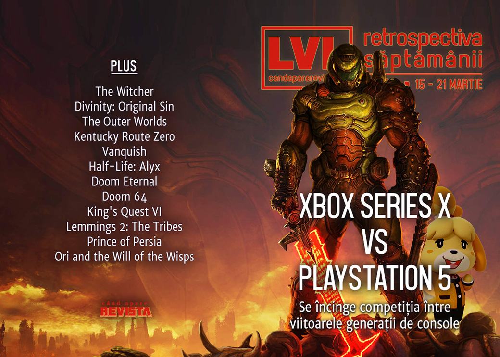

Retrospectiva săptămânii 15 - 21 martie 2020
O săptămână cu mai multe evenimente majore: mai întâi avem primele detalii complete despre specificațiile viitoarelor console Xbox și PlayStation 5, pornind astfel cursa comparațiilor și previziunilor, s-au lansat mult-așteptatele Doom Eternal și Animal Crossing: New Horizons, Gabe Newell dă un interviu video pentru IGN, iar GDC s-a desfășurat anul acesta exclusiv online. Pe lângă acestea, avem mai multe retrospective, printre care și câteva mega-articole dedicate lui Doom (originalul și Eternal).
Linkuri rapide:
- Știri
- Articole (critică, dev, design)
- Made în România
- Anunţuri şi lansări de jocuri
- Prăvălii de jocuri

Știri
- Începe concurența între consolele viitoarei generații:
- Microsoft dă detalii despre ce poate Xbox Series X (Eurogamer, EGM, VideoGamesChronicle)
- Și, în premieră, Sony prezintă specificațiile PlayStation 5. (Eurogamer, Shacknews, Kotaku, Polygon, EGM, Ars Technica)
- Everything that happened at the PS5 deep dive event, including the fact that we haven’t even seen the damn thing yet (Destructoid)
- Netflix oprește producția la sezonul 2 din The Witcher, care avea loc în Marea Britanie, din cauza pandemiei de coronavirus.(Eurogamer, PC Gamer)
- Compania Razer se alătură eforturilor de combatere a coronaviruslui și va fabrica, în loc de periferice, un milion de măști chirugicale pe care le va dona țărilor din toată lumea. (DSOGaming, PCGamesInsider.biz)
- Microsoft și-a atins - cu ceva ani întârziere - estimarea de a avea Windows 10 instalat pe 1 miliard de dispozitive. (PC Gamer)
- S-a desfășurat ediția 2020 a GDC, de data aceasta exclusiv online. (Shacknews, RPS)
- Și s-au decernat și premiile IGF, marele câștigător fiind A Short Hike. (Destructoid, GamesIndustry.biz)
Articole (critică, dev, design)
- How a would-be priest explores the horror of God in videogames (RPS)
- Against the Hegemony of Hit Points (EGM)
- Online Gaming in Sub Saharan Africa with No Local Servers (Escapist)
Actualitate
- Going for speed: The load-busting, lag-limiting tech of the Xbox Series X (Ars Technica)
- Sony and Microsoft are playing different card games (GamesIndustry.biz)
- PS5 vs. Xbox Series X: a complicated battle of SSD and GPU speeds (The Verge)
- 28 great GDC talks you can watch for free right now (PC Gamer)
What the heck is DirectX 12 Ultimate and what does it mean for PC gaming? (RPS)
All The Announcements From Today's Nintendo Indie Direct (Kotaku)
Not-a-review
- The joy of playing a great game before its superior sequel (RPS)
- The Outer Worlds continues Fallout’s 20-year-old ‘dumb’ mode tradition (Polygon)
- A Dystopian, David Lynch-Inspired Video Game That Leaves Its Meaning Up to You (Hyperallergic)
- Vanquish and the Joy of Movement (Unwinnable)
Industrie
- Gabe Newell a dat un interviu video pentru IGN: Gabe Newell Opens Up About Valve’s Past, Present, and (Unexpected) Future (găsiți detalii pe scurt pe VideoGamesChronicle sau VG247)
- From AAA to Indie: Kitfox Games Is Carving Its Own Quirky Path to Success (Escapist)
- The developer of Journey bucks the trend of "predatory" monetisation (GamesIndustry.biz)
- Making games in lockdown: How Italy’s developers are coping with COVID-19 (GamesIndustry.biz)
Istorie, retrospectivă
- The man who made the NES (Eurogamer)
- King’s Quest VI is as good as the King’s Quest series got (RPS)
- Game over, man: How Aliens—not Alien—shaped decades of gaming history (A.V. Club)
- A short history of banned games in Germany (GamesIndustry.biz)
- ASCII art + permadeath: The history of roguelike games (Ars Technica)
- Best Box Art (Part 2): Computer Games On Printed Paper (A Critical Hit)
- Lemmings 2: The Tribes (The Digital Antiquarian)
DOOM!
- Stairway to Badass: The Making and Remaking of Doom (Shacknews)
- Hell Razer: The Making of Doom Eternal (Shacknews)
- Super Doom: How id Software’s Opus Made the Jump to Super NES (Shacknews)
- Apollo 11 Situations: John Romero on Porting Doom and Wolfenstein 3D (Shacknews)
- The Doom Multiplayer Fans Still Ripping and Tearing 25 Years Later (EGM)
Dev, making of, mecanici
- War Stories: How Prince of Persia slew the Apple II’s memory limitations (Ars Technica)
- How lost classic Doom 64 was revived for modern platforms (The Verge)
- The Unbearable Silliness of Doom Eternal (Paste)
Design, world-building, artă
- Understanding world-building in games (Eurogamer)
- The Art Of Ori and the Will of the Wisps (Kotaku)
- The Origin Story Of A Very Sharp Outfit (Kotaku)
- Our Favorite Photos From Cosplay's All-Star Weekend (Kotaku)
- Game Box Art Critique March: Ori and the Will of the Wisps, Animal Crossing: New Horizons, Doom Eternal (VideoGamer)
Made în România
- Jocuri 100% româneşti pe care le poţi juca cu prietenii, cât staţi în izolare (Adevărul)
- The Equinox Hunt are acum demo. (Romanian Game Developers)
Anunțuri şi lansări de jocuri
Anunţate
- I Am Dead, un joc despre viața după moarte publicat de Annapurna Interactive (Polygon)
- Shadow Man Remastered (Shacknews)
- Sin remasterizat (PC Gamer)
- The Signifier (Gematsu)
- American Motorcycle Simulator (PC Gamer)
- Sea of Stars, un retro-JRPG de la creatorii lui The Messenger (Eurogamer)
Lansate
- 17 martie: Exit the Gungeon (Steam)
- 19 martie: TT Isle of Man: Ride on the Edge 2 (Steam)
- 19 martie: Panzer Corps 2 (Steam)
- 19 martie: Ostriv (early access) (Steam, gog.com)
- 20 martie: Doom Eternal (Steam)
- 20 martie: Animal Crossing: New Horizons (Nintendo Store)
- 20 martie: Lumote (Steam)
Prăvălii de jocuri
Știri
- Steam breaks new record with over 21 million concurrent players, 6 days after setting its previous record (DSOGaming)
- Steam’s Interactive Recommender is now built into the store to help you find hidden gems (PC Gamer)
- Humble Bundle is the latest company to adopt Nintendo Direct-style news format (Destructoid)
Update catalog
Jocuri gratis și free weekends
- Battle monsters and puns in this stylish, free roguelike (PC Gamer)
- Goat of Duty is free to keep for a limited time (PC Gamer)
- Football Manager 2020 is free to play for the next week (EGM)
- Loads of “games to help you stay inside” are free on Itch.io right now (RPS)
- The Stanley Parable and Watch Dogs are this week’s Epic Games Store freebies (RPS)
- Tomb Raider, Lara Croft and the Temple of Osiris & Headsnatcher are available for free on Steam (DSOGaming)
- GOG's "Stay at home" promotion offers 27 free games that you can download and play (DSOGaming)
- Drawful 2 is free on Steam for three weeks to help those at home (Shacknews)
- Mysterious metroidvania Mable and the Wood is free right now (PC Gamer)
Reduceri și promoții
- Steam Game Festival Spring Edition offers 40+ games from GDC 2020 (Shacknews)
- Humble’s Capcom Mega Bundle is packed with Mega Man classics (PC Gamer)
- Bored? 'The Sims 4' is just $5 for a limited time (Business Insider)
- Weekend PC Download Deals for Mar. 20: Free Tomb Raider on Steam (Shacknews)
- Binding of Isaac creator’s Stay Inside bundle gathers up a stellar bunch of games for £15 (Eurogamer)
Retrospectiva săptămânii este rubrica duminicală în care trecem în revistă evenimentele săptămânii de pe frontul de gaming: știri şi articole (scrise de alții, bineînțeles, că e mai ușor aşa), industrie, lansări, oferte de jocuri, toate numai de savurat la cafeaua de duminică dimineața.
De asemenea, rubrica e deschisă oricui vrea și poate contribui. Dacă ai citit vreun articol sau vreo știre interesantă și crezi că merită incluse în retrospectiva săptămânii, te așteptăm pe forum pe unul dintre topicurile dedicate: Știri, Articole, Gaming România].